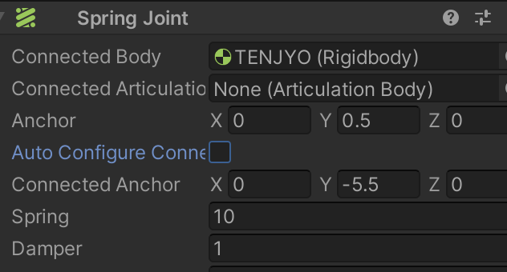
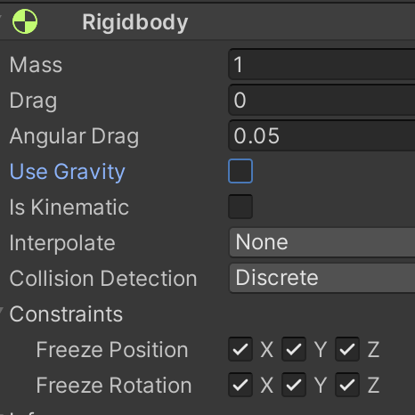
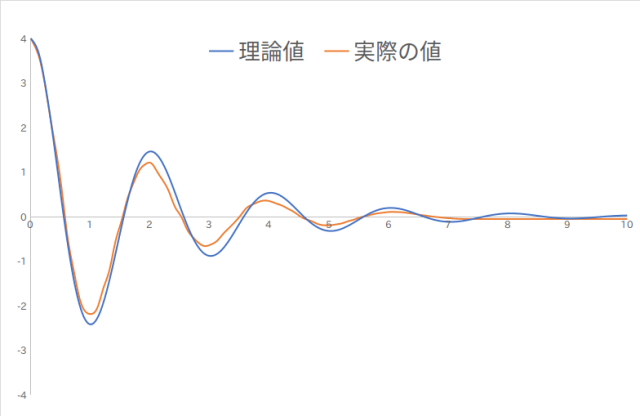

次はバネの動きを Unity を使って再現してみましょう。
まず新しいシーン Scene4 を作ります。
7ページ目を参考に、アセットフォルダの中の Scenes フォルダの中に Scene4 を新規作成し、背景を真っ黒にして下さい。
次にバネを繋ぐ天井と球を作成します。
まずヒエラルキー右クリック → 3D Object → Cube で箱を新規作成し、名前を「TENJYO」、Position を (0,6,0)にして下さい。
またバネを繋ぐためには Rigidbody が必要なので Rigidbody をアタッチして下さい。
同様にヒエラルキー右クリック → 3D Object → Sphere で球を新規作成し、名前を「TAMA」、Position を (0,0,0)にして下さい。
バネを繋ぐためには Rigidbody が必要なので Rigidbody をアタッチして下さい。
次にバネ(Spring)の設定をします。
TAMA のインスペクタを開き、Add Component → Physics → Spring Joint で Spring Joint コンポーネントをアタッチします。
その後、ヒエラルキーにある TENJYO をドラッグして Spring Joint の Connected Body の右にある None と書いてあるセルにドロップします。
すると None の表示が TENJYO に変わって TAMA と TENJYO がバネで繋がります(図1参照)。
なお「バネは透明で目では見えません」ので、何も表示されなくても慌てなくて良いです。
次にバネの強さとダンパーの強さの設定をします。
ダンパーとは乗用車にもついているバネの振動を抑える装置のことでショックアブソーバとも呼ばれます。
さてバネの強さは Spring で指定しますが、今回はデフォルトの 10 のままにします。
ダンパーの強さは Dumper で指定しますが、デフォルトの 0.2 では振動がなかなか収まらないので、今回は 1 にします。
さらに、このままだと Unity が気を利かせてバネの長さを自動的に調整してくれます。
この後おこなう例で自動で長さを調整されると具合が悪いので、Auto Configure Connected Anchor のチェックを外して下さい。
ここまでの Spring Joint の設定は以下の図1となります。
図1. Spring Joint の設定

さてこれで準備が終わったので早速実行ボタンを押して動かしてみましょう。
すると TENJYO まで一緒に落ちてきてしまいました。
そこで TENJYO を空間に固定して動かないようにしてあげましょう。
まず TENJYO のインスペクタを表示して Rigit Body の Use Gravity のチェックを外します。
すると TENJYO に重力がかからなくなります。
さらに下にある Constraints → Freeze Position の x,y,z にチェックを入れると TENJYO の位置がロックされて動かなくなります。
ついでに前のページに書いたように、 Freeze Rotation の x,y,z にもチェックを入れて回転もしないようにします。
まとめると図2の様な設定になります。
図2. TENJYO を動かないようにする

では改めて実行ボタンを押して下さい。
すると TAMA が落ち始め、しばらくすると振動して、だいたい -1 メートルの辺りで静止すると思います(TAMA のインスペクタを開いて Position の Y 値を見て下さい)。
では次に TAMA の重さを変えたらどうなるか見てみましょう。
実行状態のままで TAMA のインスペクタ の Rigit Body の Mass(重さ、単位は kg) を 1 kg から 2 kg に変更して下さい。
するとだいたい -2 メートルの辺りで静止します。
同様に 3 kg にすると -3 メートル辺りまで落ちる事が分かります。
この様に、重さに比例してバネの長さが伸びる事が分かりました。
では次に振動を試してみましょう。
まず TAMA の重さを 1 kg に戻してください。
また重力がかかっていると挙動が分かりにくいので、TAMA のインスペクタ の Rigit Body の Use Gravity のチェックを外して下さい。
さらに TAMA のインスペクタの Position の Y の値を 4 にします。
ここまで出来たら早速実行ボタンを押してみましょう。
すると HAKO が振動を始め、やがて 0 メートルの位置で静止します。
うまく行ったら、Spring や Dumper や Mass の値を色々変更してどの様な動きになるか試してみましょう。
ここから先は少し難しい話なので分からなければ飛ばしても結構です。
ただし Unity の物理演算機能を使いこなすためには大事な知識ですので興味のある人は是非トライして下さい。
まず最初に示した例 1 はフックの法則を再現しています。
フックの法則とは、$F$ をバネにかかる力、$k$ をバネ定数、$y$ を自然長から伸び縮みとしたとき
\[
F = k \cdot y
\]
となる法則です。
もし $F$ として重力を考えると、$m$ を物体の重さ、 $g$ を重力加速度としたとき
\[ m \cdot g = k \cdot y \]なので、これを変形して
\[ y = \frac{m \cdot g}{k} \]が成り立ちます。
さて Unity では $k$(バネ定数) ≒ Spring となります(完全イコールでないのは例のごとく計算誤差があるためです)。
例 1 では $m$ = mass、 $g$ = 9.81、$k$ ≒ Spring = 10 としていたので、
重さ 1 kg → 最初の位置から 約 1 メートル下がる
重さ 2 kg → 最初の位置から 約 2 メートル下がる
重さ 3 kg → 最初の位置から 約 3 メートル下がる
という結果になりました。
次に例 2 ではダンパーをバネに加えた時の減衰振動を再現しています。
さて$k$ をバネ定数、$c$ をダンパーの減衰係数(どれだけ振動を抑えるかを決めるパラメータ)、 $m$ を物体の重さ(kg)とします。
これから減衰率(振動が小さくなる速さ) $r$ と 固有角周波数(ダンパーが付いてない時の振動の速さ) $w_0$ を以下のように求めます。
ここでもし $w_0^2 - r^2 > 0$ つまり $2 \cdot \sqrt{ m \cdot k} > c $ ならば、時刻 t 秒時点における物体の位置 $y(t)$ は以下の式で求まります。
\[ y(t) = y(0) \cdot {\rm e}^{-r\cdot t} \left \{ \cos (w_d \cdot t) + \frac{r}{w_d}\cdot \sin (w_d\cdot t) \right \} \]ここで $y(0)$ は最初の位置、$w_d = \sqrt{ w_0^2 - r^2}$ です。
※ この式を求めるためには微分方程式を解く必要があって長くなるので今回は省略します。気になる人は調べてみましょう。
さて Unity ではバネ定数 $k$ ≒ Spring、減衰係数 $c$ ≒ Dumper、$m$ = mass で、例 2 では Spring = 10、Dumper = 1, mass = 1、$y(0) = 4$ としてたので、理論的には次の様な式となります。
\[ r = \frac{1}{2\cdot 1} = 0.5 \] \[ w_0 = \sqrt{\frac{10}{1}}( = 3.1622776\cdots) \] \[ w_d = \sqrt{ 9.75 }( = 3.12249899\cdots) \] \[ y(t) = 4 \cdot {\rm e}^{-0.5\cdot t} \left \{ \cos (\sqrt{ 9.75 } \cdot t) + \frac{0.5}{\sqrt{ 9.75 }}\cdot \sin (\sqrt{ 9.75 }\cdot t) \right \} \]
理論値と Unity 上で実際に測定した値をグラフにすると以下の通りになります。
縦軸が $y(t)$、横軸が $t$ 秒です。
誤差はありますが、だいたい理論通りに減衰振動していることが分かります。
図3. 理論値と実際の値

なお Dumper = 0 にすれば理論的にはずっと振動しているはずなのですが、Unity の場合はいずれ静止します。
ちゃんと調べてはいませんが、どうやら Unity では Dumper の値が現実世界の減衰係数よりも少し大きめに設定されているみたいです。